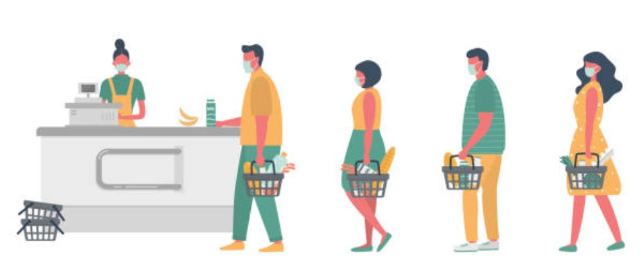
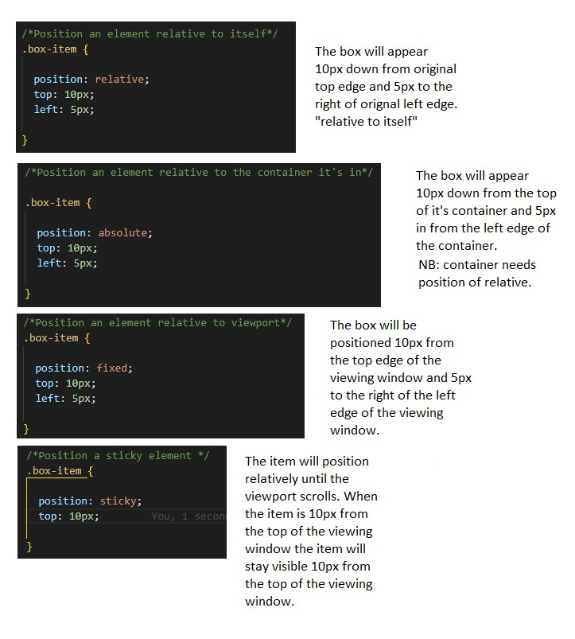

...the differences between relative, absolute, and fixed positioning (and the two others).
introduction to the postion types
Every part (element) on a webpage has an invisible container (or box) that you can position on the page using the position property. There are five main position types: static, relative, absolute, fixed, and sticky. Each type is a different method for the web programmer to place items on a page for the viewer.
Documents in HTML display in the order of the document flow. The document flow in HTML displays items in order, one after the other. Block items, stack and display on a new line whereas inline items don't get a new line. By default items such as div, paragraph, and lists, are block items (on a new line) whereas, images, links, and inputs are inline items (and don't get a new line). You can force these defaults to change.
Positioning is controlled by setting the values of the keywords: top, bottom, left and right. The keywords mean different things depending on which type of position you are using (relative, absolute, etc.). For example, top measures something different using absolute positions compared to relative positions.
The keywords top, bottom, left and right refer to the distances or offsetting values (whether distances from itself or from the edges of the containing item). It is easiest to think of the containing item like a box. Using positive values of the keywords will move the item inwards (or toward the centre of the box) and negative values will offset the item outwards (away from the centre of the container).
position: static
This is the default value for items on a webpage and not generally used except to force the default position on an item.
The behaviour of static items (all items, by default) in the document flow is to display the item in the order they appear in the document flow.
It is effectively an unpositioned state and top, bottom, left, and right values cant be set in that context.
Example

position: relative
A position set to relative is used to display an item in a position that is offset to it's normal default (or static) position. That means relative to ITSELF and not other items; a common misconception.
Within the document flow , the relative position simply displays the item in a different spot but other items won't shuffle around to fill it's hole in the document. This means the document still recognises the space where the original item was on the page. Imagine someone holding your place in the supermarket queue by pretending you are still there.
If a parent item on a web page has a child item positioned within it, then the relative position has to set in the parent item for the child positioning to work.
Example

position: absolute
The absolute postion allows an item to be placed anywhere you want on a web page. The absolute position refers to the placement of the item within the closest conatining parent element. By default the containing parent of items on a webpage is the HTML tag unless it's subsquently contained inside another element (like a div). So unlike the relative position, an item using absolute , positions itself relative to SOMETHING ELSE (the parent).
Within the document flow an absolute item looses it's place and the next item will move to fill in the gap left by the item positioned using the absolute value. Again, if you were in a supermarket queue the shopper behind you would move forward to take your place.
Example

position: fixed
A fixed position item is positioned relative to the browser window (also named the viewport). The effect is that you will always see this item on the screen even if you scroll around on the the page. So it will hide other content because it'll always be visible and it's not in the document flow so other items won't reposition or shuffle around in response to the fixed item moving about.
Example

position: sticky
Sticky is a newer postioning tool and not fully supported in all browsers. It is referred to as a hybrid position; sometimes behaves like a relative and sometimes like fixed position. A sticky item will act like a relative item until a specified viewport position is met, then it acts like a fixed item.
Example

summary
The positioning on webpages is controlled using the the position method. Items can be made to appear in deifferent palces on a webpage and the positions are determined by reference to itself, it's container, and/or the viewing window. Depending on the method used, the position of other elements on the web page may change.
Watch this YouTube video to deepen your understanding on this subject.
Click here to go to my list of blogs.